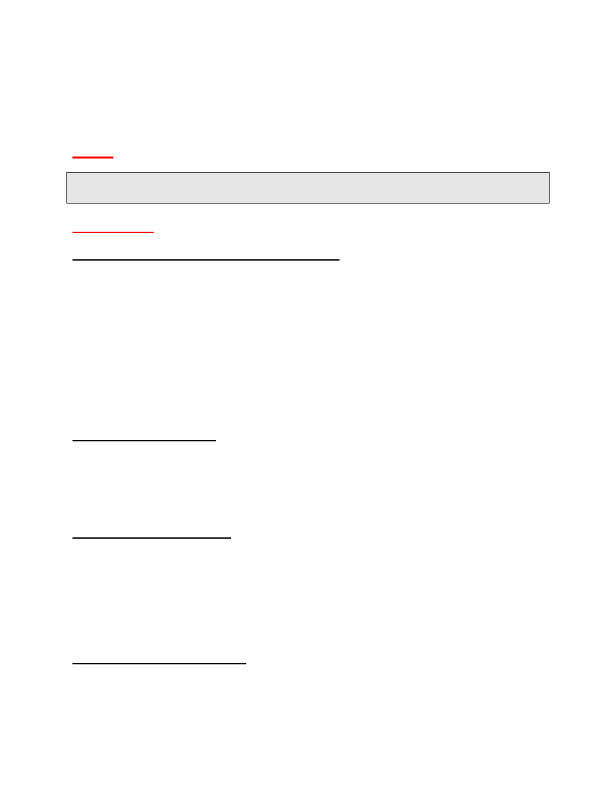
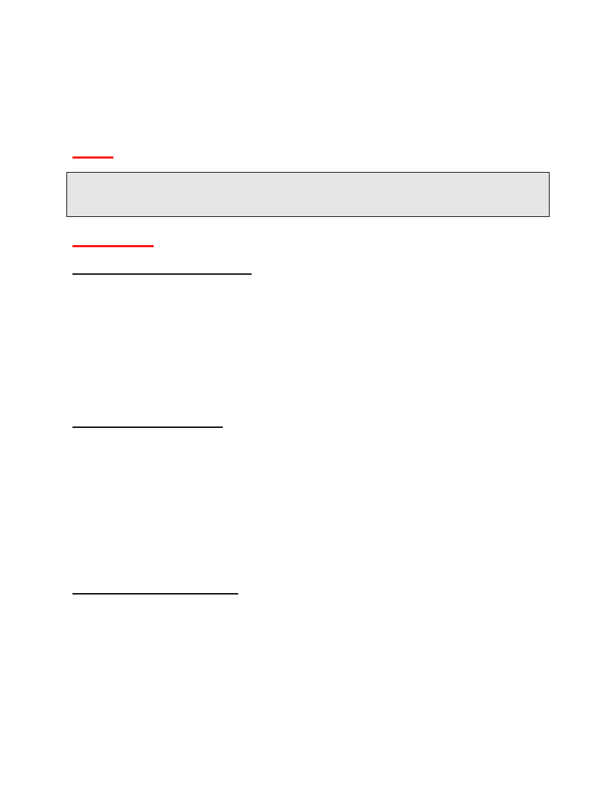
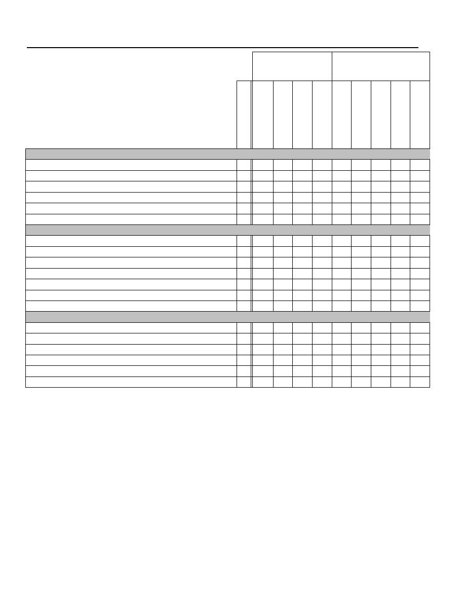

1699
Goals, Initiatives
and Outcomes
for the
2009 and 2010
Biennium
City of Williamsburg
Adopted November 13, 2008
Prince George Street in downtown Williamsburg
Updated February 28, 2010
Prince George Street in downtown Williamsburg
www.williamsburgva.gov
MID-COURSE
ASSESSMENT

Updated February 2010
B-2
Introduction
Williamsburg will become an evermore safe, beautiful, livable city of historic and
academic renown, served by a city government--cohesively led, financially
strong, always improving--in full partnership with the people who live, work and
visit here.
City of Williamsburg Vision
To advance the city’s vision, every two years the Williamsburg City Council identifies
new strategic objectives for city government. Biennial Goals, Initiatives and Outcomes
(GIOs) provide an expression of city priorities, as specific and measurable as possible,
covering a two year period. Longer term objectives are expressed in terms of what the
city hopes to accomplish in the next two years toward that objective.
GIOs are not intended to be a comprehensive list of all city services and activities.
Instead, they provide a concrete, coordinated expression of City Council's direction for
change and focus in the near future. In that way, they drive city government operating
budget and capital budget formation. The 2009/2010 Biennial Goals, Initiatives and
Outcomes, adopted in November 2008, guide budget decisions for two fiscal years, that
is for FY 10 and FY 11.
Under nine Goal statements 69 specific Initiatives are identified. In addition to the
Initiatives, Outcomes from the National Citizen Survey (NCS), and “Desired Outcomes”
and Observed Results,” provide performance metrics which help assess goal
achievement. Williamsburg participated in the NCS in May 2008. Reported here are
citizen ratings of “Good” or “Excellent” for 69 questions and whether those ratings were
“above,” “below,” or “similar” to the benchmark average of hundreds of other cities and
counties across the nation (cross referenced to the page in Williamsburg’s NCS
Report).
The Biennial GIOs are created in light of a variety of resources including the city's
Comprehensive Plan, Five Year Capital Improvement Program (CIP), and Economic
Development Strategic Plan; and with input from citizens, city staff, and volunteers.
Biennial goal statements directly align with the recently adopted 2006 Comprehensive
Plan goals. Initiative statements with a
*
symbol directly link to projects in the city’s
CIP.
Public comment is always welcomed. Go to
www.williamsburgva.gov
and click on
“Goals, Initiatives and Outcomes.”
____________________________
__________________________
Jeanne Zeidler, Mayor Jackson
C.
Tuttle,
City
Manager
Updated February 2010
B-3
Goal I
Character of the City
GOAL
Protect and enhance Williamsburg’s unique character—the Colonial Williamsburg
Historic Area, College of William and Mary, entrance corridors, urban
environment, neighborhoods, and open spaces.
INITIATIVES
Redevelopment Focus Areas
Encourage and assist in redevelopment of underused commercial properties and new
infill projects, during the biennium, especially on:
Richmond Road near College, and from Brooks Street to Ironbound Road.
City Green Project is complete with Domino's Pizza open and space for three
additional businesses, plus 24 condominiums. Chipotle Restaurant is scheduled
to open in March 2010. Plaza Azteca, Kilwin's and Firehouse Subs are open at
High Street, and Terra is under construction.
Monticello Avenue in the vicinity of the W&M School of Education site.
Work continues on the W&M School of Education, which is expected to be
completed in spring 2010.
Capitol Landing Road from Bypass Road to Merrimac Trail.
The Colonial Services Board has expanded its offices to include a location at
Alexander Commons Office Park at 921 Capitol Landing Road. 946 Capitol
Landing Road (DMV shopping center) is fully leased, with two new tenants (retail
and professional services) opening businesses this past summer.
Second Street, Penniman Road and Page Street.
Next to New Consignment (replaced Collier’s Antiques) opened at 239 Penniman
Road. PSSG, a professional HUB zone business, opened at 201 Penniman.

Updated February 2010
B-4
Corridor Beautification
*
Collaborate with James City and York Counties in a planning effort led by the Greater
Williamsburg Chamber and Tourism Alliance to enhance the Route 60 east corridor
from Busch Gardens into the city. Implement the city portions of the regional plan
during the biennium.
The city portion of the corridor enhancement project is complete.
Complete planting of the Quarterpath Road buffer between The Village at Quarterpath
and Quarterpath Park.
The buffer planting is complete. City’s personnel installed the material supplied by the
developer of Village at Quarterpath.
In conjunction with redevelopment projects in the Scotland/Prince George Street
corridor, improve sidewalks, lighting and landscaping from the Deli area to Boundary
Street.
New brick sidewalks and landscaping will be required when the following projects are
constructed: Mama Mia’s redevelopment; College property beside Wawa; and new
commercial building on Scotland Street beside Paul’s Deli.
Working with the Beautification Advisory Committee, better define city landscape and
planting standards, themes and strategies to enhance the beauty of Williamsburg’s
corridors and public spaces.
A plan for brick sidewalks and landscape improvements between Boundary Street and
Wawa has been developed, and construction should be completed in FY10. Conceptual
plans are being developed for landscaping Prince George Street between Boundary
and Scotland Streets. No progress yet on better defined standards.
Underground Wiring
*
Complete underground wiring on Page Street from the railroad overpass to the Colonial
Parkway overpass by July 2011, subject to funding in the Capital Improvement Plan and
Dominion Virginia Power participation.
Future funding is included in five year CIP, but this project will likely be delayed to
conserve capital funds in this recession.
Complete underground wiring of a portion of Berkeley Lane if authorized by a Special
Assessment District with 50% homeowner participation.
Project has not been authorized by the homeowners at $8,000 per lot-not included in
CIP.

Updated February 2010
B-5
Work with Dominion Virginia Power and developers to underground utilities on
Quarterpath Road between Route 199 and Redoubt Park.
This project will be completed in conjunction with Riverside development several years
out.
Open Space and Woodlands Preservation
Actively pursue acquisition of open space and land conservation, either through
purchase of ownership or development rights, both in the City and in Waller Mill
Reservoir watershed, whenever availability, price and budget capacity align.
No new acquisitions occurred in 2009.
City Square Municipal Center
*
Begin construction of the Municipal Building expansion and renovation project, and
complete the Emergency Operations Center project, during the biennium per the Five
Year Capital Improvement Plan. Refurbish the Transportation Center and Community
Building to address wear and tear on those heavily used buildings. Continue planning
for replacement of the Stryker Building after the biennium.
Municipal Building expansion and energy began in November 2009 and is expected to
be completed in 15 months. Refurbishing projects at the Transportation Center and
Community Building have been completed.
Historic Building Survey
Update the City’s original 1992 survey of the Historic Building Survey for the
Architectural Preservation District by end of 2009, to add buildings which are older than
50 years.
Preliminary work by planning staff has begun, with completion anticipated in fall 2010.
Heritage Tree Protection
Identify and further protect heritage trees located on city property with program in place
during the biennium.
In partnership with CWF and W&M, heritage, memorial, specimen, and street trees
have been identified throughout the city. A revised heritage tree program ordinance,
which includes the listings of trees on public property, will be presented to Council in
spring 2010.
Updated February 2010
B-6
Wayfinding Improvements
Assess effectiveness of the Historic Triangle Wayfinding sign system after two years of
service, and incorporate downtown parking and tour bus directional signs into the
wayfinding system, to be completed by the end of 2009.
Assessment completed by consultant and forwarded to both Counties. Downtown
parking signage and tour bus signage has been authorized for fabrication.
OUTCOMES
KEY OUTCOME MEASURES
Desired Outcomes
Observed Results
Open space preserved as the largest single
land use category in the City.
In
FY 09,
there are
2,275 acres
(39.5% of total City land area)
reserved as open space either as
public parks and parkways, College
Woods, CWF golf courses or sensitive
environmental no-build areas.
* Source: City Planning Department
Overhead power lines replaced with
underground lines throughout the City,
especially on entrance corridors, at an average
rate exceeding 1,000 feet per year since 1980.
In FY 08 wires were placed
underground on the northerly 3,000
feet of Quarterpath Road. Since 1982,
32,250 (6.1 miles) have been placed
underground by City action (an
average 1,240 feet per year).
* Source: City Public Works & Utilities Dept.
The visual and historic character of the City
protected through an active and effective
architectural review program.
48% of City land is subject to the
Architectural Review Board. ARB total
cases and percent approval:
Cases % Approved
FY 06 - 169 98%
FY 07 - 161 84%
FY 08 - 150 83%
FY 09 - 168 82%
* Source: City Planning Department
Redevelopment, infill, or new development
projects continue to refresh the City as indicated
by building permits valued at least $50 million
annually issued.
Building permits issued and total
value:
FY 06 – 252 permits, $56.4 mil
FY 07 – 291 permits, $43.7 mil
FY 08 – 268 permits, $55.4 mil
FY 09 – 200 permits, $27.0 mil
*Source: City Codes Compliance Division
Updated February 2010
B-7
CITIZEN RATINGS OF OUTCOMES FROM 2008 NATIONAL CITIZEN SURVEY
Measure
Percent
Rated
Compared
to
“Good”
National
or “Excellent
Benchmark
Overall Quality of Life in Williamsburg (p.7)
78%
above
Williamsburg as a place to live (p.7)
85%
above
Overall quality of new development in
56%
similar
Williamsburg (p.14)
Overall appearance of Williamsburg (p.14)
88%
above
Cleanliness of Williamsburg (p.24)
91%
above
Quality of overall natural environment (p.24)
76%
above
Preservation of natural areas (p.24)
58%
similar

Updated February 2010
B-8
Goal II
Economic Vitality
GOAL
Increase employment opportunities, income, business success, and city
revenues by supporting, promoting, and expanding the city’s tourism and
education base and other development and redevelopment opportunities.
INITIATIVES
Tourism Promotion
Continue to invest heavily in tourism promotion through the Colonial Williamsburg
Foundation, the Greater Williamsburg Chamber and Tourism Alliance, and the
Williamsburg Area Destination Marketing Committee to increase visitation to
Williamsburg.
City continues to heavily invest in tourism promotion by providing $2.2 mil to Colonial
Williamsburg Foundation and Chamber/Tourism Alliance in FY10. Additional, $1.5 mil is
provided for destination marketing from the $2 surcharge room tax. City continues to
provide staff support to destination marketing efforts—now in its fifth year.
Economic Development Incentives
Assess the potential in Williamsburg for business incentive programs based on the
State legislation that allows local Technology Zones, Redevelopment Real Estate Tax
Exemptions, Tourism Zones, and Economic Revitalization Zones. Adopt appropriate
ordinances during the biennium, with implementation and marketing to follow, for those
programs deemed to be effective.
City Council and the EDA convened a working group to study the feasibility of an
Arts/Creative Economy District. A consultant, Arstpace, will visit the City on March 2
and 3, 2010 and submit its feasibility report in the spring.
Student Oriented Retail
Support the effort of the College of William and Mary, the Williamsburg Redevelopment
and Housing Authority, and private developers to redevelop properties for mixed use
student-oriented retail close to the campus. This effort includes the William and Mary
Foundation’s property on Richmond Road, the property at the corner of Armistead and
Prince George Streets, and the Williamsburg Redevelopment and Housing Authority
property on Scotland Street.

Updated February 2010
B-9
City Green Project at 1220 Richmond Road has been completed this year. William and
Mary Real Estate Foundation has submitted proposed plans and ordinance revisions for
its property adjacent to WaWa for mixed use development (residential and retail). ARB
approved the conceptual plans and Planning Commission will review in March 2009.
Project should be completed in FY11.
Hermes Inc. has submitted plans for a 12,920 sf retail space adjacent to Paul’s Deli.
Project received ARB approval in August 2009 and Planning Commission approval in
September 2009
.
Owner plans to begin construction in early 2010.
Mama Mia's development received conceptual ARB approval and Planning Commission
and City Council approval for rezoning with conditions in 2008. Owners would like to
submit site plan this spring and start development this summer.
Expansion and Recruitment of Targeted Businesses
Pursue opportunities in targeted business sectors - such as, creative enterprises;
regional or branch headquarters, research and technology, professional services, and
nonprofits – through marketing and development assistance.
HTC Economic Development Diversity Task Force (EDD and EDA Chair are members)
is researching this topic for the entire Historic Triangle.
Southeast Quadrant
Support Riverside Hospital’s application for a Certificate of Public Need to construct
Doctors Hospital of Williamsburg, and facilitate the development of a high quality,
sustainable new neighborhood and community in the Quarterpath/Riverside sector of
the city.
The Certificate of Public Need was approved by the state in May 2009. City staff is
reviewing development plans for infrastructure improvements for Quarterpath at
Williamsburg. The QCDA has started meeting once again. Plans for Doctors Hospital of
Williamsburg are expected to be submitted in fall 2010.
Future of State Hospital Property
Collaborate with James City County, the Virginia Department of Mental Health, Mental
Retardation and Substance Abuse Services, the College of William and Mary, and
others in implementing the 2008 Conceptual Plan for Eastern State Hospital property,
and adjoining areas within the city limits, especially the College’s Dillard Complex.
Little progress is apparent in moving surplus Eastern State Hospital property to
alternative use.

Updated February 2010
B-10
“Virginia Green” Certification for Tourism Businesses
Assist businesses with the Virginia Tourism Corporation’s “Virginia Green” certification
and promote the businesses as they become certified.
Worked with three W&M MBA Student volunteer interns in summer 2009 to inform all
local businesses of this opportunity. The following businesses have received the
certification: Aberdeen Barn, Black Angus, Christiana Campbell's, Huzzah!, King's
Arms, Shields Tavern, A Williamsburg White House B&B, Governor's Inn at Colonial
Williamsburg, Inn at 802 B&B, Patrick Henry Inn, the Hospitality House, the
Williamsburg Inn, the Williamsburg Lodge, Westgate Resort, Williamsburg Manor B&B,
Williamsburg Woodlands Hotel & Suites and Bentley Manor.
OUTCOMES
KEY OUTCOME MEASURES
Desired Outcomes
Observed Results
The City advanced as an exceptional tourism
destination by supporting the Hospitality
Industry’s goal of 900,000 hotel room nights
sold each year.
Room nights sold in the city:
FY 06 - 797,832
FY 07 - 836,360
FY 08 - 812,887
FY 09 - 673,735
* Source: City Finance Department
The City’s position as a retail center of the
region maintained with per capita retail sales
growing annually.
Per capita retail sales in the city:
FY 06 – $23,070
FY 07 – $27,953
FY 08 – $31,534
FY 09 -- $27,202
* Source: Virginia Department of Taxation
Economic opportunity for the citizens
enhanced with per capita personal income
growing annually.
Per capita personal income in the
city:
FY 04 – $40,708
FY 05 – $41,394
FY 06 – $44,148
FY 07 -- $45,843
* Source: US Department of Commerce,
Bureau of Economic Analysis
Updated February 2010
B-11
A balanced tax base sustained by growing
the percent of the taxable land book
consisting of commercial property.
The percent of taxable City
commercial property on the City’s
Land Book:
FY 06 – 35%
FY 07 – 34%
FY 08 – 37%
FY 09 – 36%
* Source: City Assessor
The City’s position as a regional employment
center maintained by growing the total
number of in-city jobs across all industries.
The number of jobs based in the city:
FY 05 – 17,043
FY 06 – 16,865
FY 07 – 16,180
FY 08 – 15,269
* Source: Virginia Employment Commission
CITIZEN RATINGS OF OUTCOMES FROM 2008 NATIONAL CITIZEN SURVEY
Measure
Percent
Rated
Compared
to
“Good”
National
or “Excellent
Benchmark
Employment opportunities (p.17)
40%
above
Shopping opportunities (p.17)
76%
above
Williamsburg as a place to work (p.17)
53%
similar
Overall quality of business and service
65%
not available
establishments in Williamsburg (p.17)
Economic development services (p.18)
48%
above

Updated February 2010
B-12
Goal III
Neighborhoods and Housing
GOAL
Protect and enhance the quality of the city’s residential neighborhoods, and
encourage the provision of affordable housing for city residents and workers.
INITIATIVES
Affordable Housing for Workforce and Seniors
*
Work with regional and private sector partners to identify and begin at least one new
affordable workforce housing or senior housing project in the city or region during the
biennium.
Rezoning of The Village at Quarterpath in January 2009 resulted in proffers that 10% of
the dwelling units (12 homes) will be offered for $220,000 or less. City is partnering with
Williamsburg Redevelopment and Housing Authority to investigate opportunities for
more senior and disabled housing in the city adjoining the Blayton facility. A public
meeting with Blayton residents and surrounding neighborhoods was held in December
2009 to discuss the opportunity.
New City Neighborhoods
Incorporate new city neighborhoods - notably High Street apartments and townhouses,
and The Village at Quarterpath - into the city’s neighborhood service system.
High Street apartments are now fully leased establishing a new neighborhood.
Electrical Reliability Project
Partner with Dominion Virginia Power to implement an electrical underground reliability
project in the Indian Springs area to be completed by mid-2009.
Project has been designed. Dominion is having trouble procuring all easements from
property owners which has caused a delay to the project. A portion of the project was
installed to promote interest in the remainder of the project.
Neighborhood Traffic Calming
Implement traffic calming recommendations included in the Skipwith Farms/Longhill
Woods traffic study with concurrence from the neighborhood residents, and engage
other neighborhoods with traffic calming strategies.

Updated February 2010
B-13
Bike lanes were installed along Longhill Road which narrowed the travel lanes.
Crosswalks were painted on Longhill Road at Thomas Nelson, Governor Berkeley, and
Robert Elliffe Road.
Neighborhood Guide Enhancement
Create an online, interactive version of the city’s Neighborhood Guide for the city’s
website by summer 2009.
Completed in fall 2009.
Neighborhood Landscape Grant Program
Implement the Beautification Advisory Committee’s Landscape Grant Program, which
will offer annual grant funds to city neighborhoods for landscaping work in common
areas.
The Landscape Grants Program has been established by the Beautification Advisory
Committee, and grants have been approved for Port Anne, Holly Hills Carriage Homes,
Crispus Attucks, and Skipwith Farms neighborhoods.
Affordable Housing Zoning
Explore the use of affordable dwelling unit zoning or proffers to increase the supply of
new workforce housing in Williamsburg, particularly in the areas of prospective
development in the southeast quadrant of the city.
Staff presentation made to City Council on affordable dwelling unit ordinances in
February 2009. Rezoning of The Village at Quarterpath in January 2009 resulted in
proffers that 10% of the dwelling units (12 homes) will be offered for $220,000 or less.
Zoning Regulations on Unrelated Occupants
Devise strategies to improve compliance with zoning regulations governing the number
of unrelated persons in a dwelling unit.
City Council approved a revised ordinance on residential occupancy limits for housing in
the rental inspection districts that meet specific criteria in December 2009.
Student/Resident Relationships
Pursue multiple strategies to better communicate and enhance relationships between
the city government, year round residents and students of the College of William and
Mary.
City implemented several communication tools to better communicate with William and
Mary students including the Student Resident Guide, city Facebook page, meetings with
student leadership and inclusion of students on city boards and commissions and focus
groups.
Updated February 2010
B-14
OUTCOMES
KEY OUTCOME MEASURES
Desired Outcomes
Observed Results
The stability and care of neighborhoods
reinforced by growing toward the
Comprehensive Plan’s goal of 50% of the
City’s housing units owner-occupied.
44.3% of the City’s occupied housing
units in the 2000 Census were owner-
occupied.
* Source: U.S. Census
Housing stock and neighborhood quality
preserved by an active property maintenance
enforcement program with a 95% compliance
rate.
Number of property maintenance
inspections and percent brought into
compliance:
FY 06 – 752 inspections, 92%
compliance
FY 07 – 1,163 inspections, 97%
compliance
FY 08 – 1,328 inspections, 96%
compliance
FY 09 – 1,284 inspections, 95%
* Source: City Codes Compliance Division
95% of property maintenance cases
brought into voluntary compliance without
resorting to court action.
Number of cases and percent brought
into voluntary compliance without
resorting to court action.
FY 06 – 311 cases, 96% compliance
FY 07 – 423 cases, 97% compliance
FY 08 – 446 cases, 96% compliance
FY 09 – 510 cases, 98% compliance
* Source: City Codes Compliance Division
95% of rental inspection program cases
brought into voluntary compliance without
resorting to court action.
Number of cases and percent brought
into voluntary compliance without
resorting to court action.
FY 06 – 38 cases, 84% compliance
FY 07 – 37 cases, 97% compliance
FY 08 – 145 cases, 100% compliance
FY 09 – 103 cases, 100% compliance
* Source: City Codes Compliance Division

Updated February 2010
B-15
CITIZEN RATINGS OF OUTCOMES FROM 2008 NATIONAL CITIZEN SURVEY
Measure
Percent
Rated
Compared
to
“Good”
National
or “Excellent
Benchmark
Quality of your neighborhood as a place
78%
similar
to live (p.7)
Sense of community (p.32)
64%
above
Openness and acceptance of the
51%
below
community towards people of diverse
backgrounds (p.32)
Availability of affordable quality housing (p.12) 20%
below
Variety of housing options (p.12)
36%
below

Updated February 2010
B-16
Goal IV
Transportation
GOAL
Provide an effective transportation system which is compatible with the future
land use plan; serves pedestrians, bicyclists and motorists; and promotes the
expanded use of transit and rail.
INITIATIVES
Ironbound Road Improvements
*
Complete the study phase for the Ironbound Road corridor from Richmond Road to
Longhill Connector Road, to include street and intersection improvements, as well as
improvements to pedestrian and bicycle facilities.
The corridor study had been delayed due to reduced VDOT funding. City has hired a
traffic engineer to study critical areas of corridor i.e. Richmond Road to High Street with
emphasis on Longhill intersection and access point to former Governor Spottswood
property.
Traffic Signal Installations
*
Install traffic signals on Richmond Road and Ironbound Road as part of the High Street
development. Per timing dictated by development and by the Capital Improvement Plan
schedule, install the Waltz Farm Drive signal at Richmond Road, the Second Street
signal at Parkway Drive, and the Route 60 East signal at Quarterpath Road, as VDOT
Urban projects.
Installation of signals at High Street are complete. Waltz Farm Dr. signal has been
delayed until the signal meets warrants. Quarterpath Road and Second Street signals
are contingent upon development in those areas.
Williamsburg Area Transport
Work with Williamsburg Area Transport to increase headways on key City bus routes
from one hour to thirty minutes.
Sunday service was implemented in fall 2008 and frequency service was implemented
on four transit lines in spring 2009.
Updated February 2010
B-17
Begin a retail trolley loop service, managed by Williamsburg Area Transport, which
connects Merchants Square, New Town and High Street by May 2009.
Williamsburg Trolley service began in August 2009 connecting Merchants Square,
Williamsburg Shopping Center, High Street and New Town.
Transportation Center Renovation
Refurbish and refresh the Williamsburg Transportation Center, which has enjoyed
heavy use since its restoration in 2002.
Project is complete. Floor tile was refurbished, stainless steel stalls installed in
restrooms and inside of the center was repainted.
Sidewalk Improvements
*
Install sidewalks and other enhancements per the Capital Improvement Plan, and with
particular emphasis on the Nassau Street tour bus stop and the Route 199 pedestrian
connection from Holly Hills Carriage Homes to the City’s sidewalk system on
Jamestown Road.
Staff put together a Revenue Sharing project with VDOT for five sidewalks: Nassau
Street, Rte. 199, Richmond Road, Henry Street, and Boundary Street. Consultant has
designed project. VDOT approval required before project can be constructed.
College and Community Connections
Coordinate with William and Mary the planning and construction of pedestrian and
bicycle access from the main campus to the proposed School of Education and
Treyburn Drive (High Street). Pedestrian access along Compton Drive and Monticello
Avenue adjacent to College Woods, including signalized crossing at Ironbound Road,
need to be funded and executed by VDOT.
College has designed a pedestrian walkway from the main campus to the School of
Education. Access to Treyburn Drive/High Street will be via this proposed walkway and
then along the sidewalk system within the School of Education There are no immediate
plans for a sidewalk along Monticello to New Town but there are signalized pedestrian
crossings at the Ironbound/Monticello intersection.
Bicycle Friendly Community
Seek certification as a Bicycle Friendly Community from the League of American
Bicyclists.
Application review to be completed summer 2010.
Updated February 2010
B-18
OUTCOMES
KEY OUTCOME MEASURES
Desired Outcomes
Observed Results
Ridership of Williamsburg Area Transport
steadily increasing.
Ridership
FY 06 - 610,360
FY 07 - 670,939
FY 08 - 770,405
FY 09 - 865,552
* Source: Williamsburg Area Transport
Ridership on Amtrak passenger rail from the
Williamsburg station steadily increasing.
Total ridership for Amtrak from the
Williamsburg station
FY 05 - 37,450
FY 06 - 37,957
FY 07 - 41,941
FY 08 - 49,685
* Source: Amtrak
The City’s portion of the Regional Bikeway
Plan accomplished, which calls for 27.6 miles
bike lanes, bike paths, and other facilities.
In
2009
there are
14.3 miles
of bike
paths, and other facilities in the city
(52% of the desired total).
* Source: City Planning Department
Safety on public streets improved by reducing
the number of accidents with injuries from
year to year.
Accidents with injuries within city limits
FY 06 - 56
FY 07 - 68
FY 08 - 72
FY 09 - 55
* Source: Williamsburg Police Department
CITIZEN RATINGS OF OUTCOMES FROM 2008 NATIONAL CITIZEN SURVEY
Measure
Percent
Rated
Compared
to
“Good”
National
or “Excellent
Benchmark
Ease of car travel in Williamsburg (p.9)
68%
above
Ease of bus travel in Williamsburg (p.9)
43%
similar
Ease of bicycle travel in Williamsburg (p.9)
52%
similar
Ease of walking in Williamsburg (p.9)
67%
above

Updated February 2010
B-19
Traffic flow on major streets (p.9)
53%
not available
Street
repair
(p.10)
61%
above
Street cleaning (p.10)
75%
above
Street
lighting
(p.10) 67%
above
Snow removal (p.10)
71%
above
Sidewalk maintenance (p.10)
66%
above
Amount of public parking (p.10)
44%
not available

Updated February 2010
B-20
Goal V
Public Safety
GOAL
Secure an ever safer community by enabling
police, fire, emergency management
and judicial operations to protect and serve city residents, visitors, businesses
and historical assets.
INITIATIVES
Storm Ready Community
Complete the National Oceanic and Atmospheric Administration (NOAA) “Storm Ready
Community” certification process by end of 2008 to better communicate with citizens
before, during, and after severe weather.
The City of Williamsburg received “Storm Ready Community” certification status from
the National Oceanic and Atmospheric Administration in December 2008.
Neighborhood Response Teams
Conduct refresher training by summer 2009 for the existing eight Neighborhood
Response Teams (Citizen Emergency Response Teams – CERT program) to better
serve the needs of Williamsburg residents during emergencies.
The Quarterpath Recreation Center hosted a CERT Refresher training in July 2009, and
a successful Mass Casualty Drill
involving 28 CERT members
in October 2009
.
Both
events
involved Fire, Human Services, and Recreation Departments.
Other Refresher
days are planned during FY 2010 for the 74 CERT- trained volunteers to date.
Add a College of William and Mary campus response team as another city
“neighborhood” in the CERT program.
College representatives have been contacted to develop the Sector concept between
the college and the city. Additional meetings will be scheduled in the fall of 2010.
Updated February 2010
B-21
Emergency Medical Response
Provide faster response to emergency medical calls by the end of 2009, by training and
equipping all uniformed police officers in basic first aid. As first responders with the
fastest response time, police will assist until Fire/EMT responders arrive on scene.
Due to attrition, the Police Department currently has four "First Responders" who have
responded to fifteen medical calls since mid-May,
attending victims and monitoring
vitals while awaiting arrival of EMS personnel
.
Progress on the program slowed down
considerably in the past year because of staffing issues. Additional training for two
more officers is scheduled for February 2010.
Public Safety Physical Fitness
Promote the physical readiness of public safety personnel by establishing clear fitness
and weight management standards, linked to fitness programs and to individual
performance evaluation.
The current Fire Department physical fitness program has not produced the desired
results and is under revision with the intent of addressing the physical demands of the
job. City has applied for a grant to assist with funding this program. In 2008, the Police
Department received a newly developed comprehensive medical report detailing
employee fitness and duty status. They are awaiting medical reports from the 2009
police physicals conducted last fall, which will provide new information so progress by
employees may be evaluated.
Public Safety Laptops
Install laptops in all public safety vehicles to allow for remote connectivity to Police
systems, Fire system and GIS systems, to be completed by June 2010.
Eight out of thirteen fire department vehicles designated for laptops are equipped with
Panasonic Toughbook Laptops. All but two (Ladder Truck, Battalion Vehicle) of the
primary response vehicles are equipped with laptops. The remainder of the vehicles will
be equipped by June 2010. Moving the Williamsburg PSAP meant new CAD and
records management software. As a result, the Police portion of this goal will most
likely not be realized until 2011.
Emergency Operations Center
*
Complete the new Emergency Operations Center/ Fire Department Administrative
building with improved technology to be operational by summer 2009.
The new Emergency Operations Center/Fire Department Administrative building
opened in mid-June. The EOC was fully operational for the Surry VOPEX drill
conducted on August 4, 2009.

Updated February 2010
B-22
Ironbound Road Fire Station
*
Plan for a fire department station per the Five Year Capital Improvement Program to
better serve the northern section of the city.
The Ironbound Road fire station is included in the Capital Improvement Program for
Fiscal Years 2010 – 2014.
OUTCOMES
KEY OUTCOME MEASURES
Desired Outcomes
Observed Results
Part I crimes cleared at a rate exceeding that of
the national average. (Part I crimes are major
crimes such as: murder, rape, robbery, assault,
burglary, larceny, and auto theft.)
Clearance rate for Part I crimes:
Williamsburg National
FY 06 – 31.2% 32.5%
FY 07 – 58.5% 31.9%
FY 08 - 45.9% 32.1%
FY 09 - 42.3 % N/A
* Sources: Williamsburg Police Department
and Federal Bureau of Investigations
Police response to calls for service average
under 2 minutes, from dispatch to arrival on
scene.
Average police response time
FY 06 – 1.4 minutes
FY 07 – 1.5 minutes
FY 08 – 1.3 minutes
FY 09 – 1.2 minutes
* Source: Williamsburg Police Department
Firefighter and apparatus on scene ready for
action in under 8 minutes in 90% of cases, from
dispatch to arrival.
Fire response time in 90% of cases
was under:
90% under: Avg of all cases:
FY 06 – 7.0 minutes 5.0 minutes
FY 07 – 7.7 minutes 6.0 minutes
FY 08 - 7.3 minutes 5.4 minutes
FY 09 – 6.5 minutes 5.4 minutes
* Source: Williamsburg Fire Department
Emergency Medical (EMS) response with
Advanced Life Support (ALS) under 8 minutes
in 90% of cases, from dispatch to arrival.
ALS response time in 90% of cases
was under:
90% under: Avg. of all cases:
FY 06 – 7.9 minutes 5.6 minutes
FY 07 – 8.2 minutes 5.8 minutes
FY 08 - 8.2 minutes 5.9 minutes
FY 09 – 7.3 minutes 5.5 minutes
* Source: Williamsburg Fire Department
Updated February 2010
B-23
Property loss due to fire of less than .5% of
total protected value annually.
Property loss due to fire was:
FY 06 – $99,970 (.14% loss ratio)
FY 07 – $1,293,420 (.17% loss ratio)
FY 08 - $196,950 (.21% loss ratio)
FY 09 – $892,100 ( 1.17% loss ratio)
* Source: Williamsburg Fire Department
CITIZEN RATINGS OF OUTCOMES FROM 2008 NATIONAL CITIZEN SURVEY
Measure
Percent
Rated
Compared
to
“Good”
National
or “Excellent
Benchmark
Safety in Williamsburg’s downtown area 78%/97%
above
after dark/during the day (p.20)
Safety in your neighborhood after dark/ 77%/95%
above
during the day (p.20)
Safety from property crimes (p.20)
73%
above
Safety from violent crimes (p.20)
80%
above
Police services (p.23)
81%
above
Fire
services
(p.23)
94%
above
EMS
services
(p.23
92%
above
Crime prevention services (p.23)
80%
above
Fire prevention and education services (p.23) 80%
above
Traffic enforcement services (p.23)
64%
similar
Emergency preparedness (p.23)
69%
above

Updated February 2010
B-24
Goal VI
Education and Human Services
GOAL
Seek opportunities and implement programs that address the educational,
workforce training, health, social, and economic needs and expectations
of city
residents and workers.
INITIATIVES
Youth Achievement
Create a youth leadership council as one of the city’s youth school year achievement
activities occurring during the school year, by September 2010.
Youth Leadership was conducted through the year-round and 2009 summer youth
achievement programs, involving over 50 youth. Leadership principles were also added
to the Achieving Careers Today 2009 Summer Program which was a new program that
was developed for 16-24 year-olds utilizing federal stimulus funds. A youth leadership
council is unlikely.
Implement a ballroom dancing program by April 2009, in addition to continuing Tae
Kwan Do, for young people who participate in the city’s youth achievement program to
build self esteem and self confidence.
TAE Kwon Do continued throughout the 2009-10 school year with great success with a
number of youth winning medals in competitions. Due to budget and staffing
constraints, as well as the addition of the Achieving Careers Today Program, ballroom
dancing was placed on hold.
Youth Career Development
Assist with the development of a regional “Career Café” during the biennium that will
link high schools students with career and vocational training opportunities.
A recent partnership with Thomas Nelson Community College, which involved city
human services staff at the Williamsburg One-Stop, will highlight linkages between the
local school system, Thomas Nelson Community College, and the One-Stop in referring
youth to the proposed Career Café at the Outlet Mall.
Updated February 2010
B-25
Aging in Place Assistance
Create a senior care team by June 2009 comprised of adult services staff, health care
professionals and volunteers to assist seniors allowing them to age at home.
Present and recent Advisory Board members have discussed this care team concept
during FY09, and there have been offers to participate from volunteers with both
medical and nursing backgrounds. Group will convene in fall of 2009.
Workforce Development Assistance
Create a workforce self-sufficiency team by the end of 2008, to be located at the
Williamsburg Workforce Development Center, to address the economic and child care
needs for families.
A city Self-Sufficiency Team has been in place, comprised of a TANF, Day Care, and
Business Liaison worker (3). The Team has been expanded to 4. They were joined by
the Achieving Careers Today Coordinator this summer and will be prioritizing out-of-
school and young adults who need to be prepared for the workforce during FY 2010.
City Hospital
Continue to support a State Certificate of Public Need for construction of Doctors
Hospital of Williamsburg.
The state COPN was approved in May 2009.
WJCC 9
th
Elementary and 4
th
Middle Schools
Support and fund, as required in the Williamsburg/James City County joint school
agreement, the construction of the ninth elementary and fourth middle schools.
Both schools are on schedule to open in fall 2010.
Homelessness Task Force
Provide regional leadership to fully establish and maintain the Historic Triangle
Homelessness Prevention Task Force, in cooperation with the Peninsula Commission
on Homelessness, to provide accessible, affordable, timely shelter and community
support services to those currently or at risk of being homeless.
The city has been a major contributor to the Housing, Employment, and Linkages
Project [H.E.L.P], which was implemented in January of 2009, involving the three
localities, United Way, Salvation Army, and local faith-based communities. As a result,
local city families facing homelessness have been placed in area apartments for
stabilization and support. City has also participated in developing the Regional Plan to
End Homelessness and a multi-information tracking system on the Peninsula. Regional
Plan was presented to City Council in November 2009.
Updated February 2010
B-26
OUTCOMES
KEY OUTCOME MEASURES
Desired Outcomes
Observed Results
On time graduation rate for W/JCC students of
85%. (Will attempt to obtain data for city
students only in future updates.)
W/JCC school system on-time
graduation rate:
2005-06 – 80%
2006-07 – 78%
2007-08 – 80%
* Source: W/JCC Schools
3
rd
grade reading score on the SOL for city
students of 95%, as a key indicator of future
academic success.
3
rd
grade reading passing rate for the
SOLs at Matthew Whaley Elementary
School:
FY 06 – 81%
FY 07 – 89%
FY 08 – 90%
FY 09 – 94%
* Source: W/JCC Schools
Exceed statewide success rate of VIEW (VA
Incentive for Employment Not Welfare) program
participants at finding jobs.
% of participants finding employment:
City State
FY 06 – 76% 72%
FY 07 – 88% 67%
FY 08 – 79% 58%
FY 09 -- 66% 54%
* Source: Virginia Department of Social
Services
CITIZEN RATINGS OF OUTCOMES FROM 2008 NATIONAL CITIZEN SURVEY
Measure
Percent
Rated
Compared
to
“Good”
National
or “Excellent
Benchmark
Educational opportunities (p.28)
78%
above
Public Schools (p.29)
67%
similar
Availability of affordable quality health care
50%
similar
(p.30)
Availability of preventive health services
52%
above

Updated February 2010
B-27
(p.30)
Health and wellness services (p.31)
65%
above
Availability of affordable quality child care
25%
below
(p.32)
Services to seniors (p.33)
75%
above
Services to youth (p.33)
50%
similar
Services to low-income people (p.33)
37%
below

Updated February 2010
B-28
Goal VII
Recreation and Culture
GOAL
Add to the quality and availability of recreational and cultural facilities and
programming to meet the needs and expectations
of city residents and visitors.
INITIATIVES
Williamsburg Visual Arts Center Lease
*
Execute an option to lease with This Century Art Gallery to build a regional visual arts
center at Papermill Creek during the biennium.
Lease with This Century Gallery has been put on hold until 2010 when the Gallery will
reevaluate the fundraising climate.
Civil War Sesquicentennial
Establish Williamsburg’s Civil War Sesquicentennial committee to work with Virginia
Statewide Commemoration of the 150
th
anniversary of the war between the states.
Council adopted Resolution #09-05 assigning the Historic Triangle Collaborative and
Chamber/Tourism Alliance to a leadership role in organizing the Historic Triangle’s
participation. Subcommittees have been established in the areas of marketing,
education and sites/facilities.
Quarterpath Park Improvements
*
Replace existing ballfield lights on fields #1 and #2 at Quarterpath Park with a more
energy efficient outdoor lighting system to be operational by mid-2011.
Funding for the project has been included in the CIP for FY 11 and FY 12.
Kiwanis Park Reconstruction *
Complete Phase II reconstruction of Kiwanis Park (field #2 and #3) by spring 2009 to
serve as the region’s premier youth softball facility.
Phase II of the Kiwanis Park renovation was completed in July 2009. The facility will be
used to full capacity in the spring of 2010 as the main fields for the Department’s Youth
Softball Leagues, Williamsburg STARZ traveling fast pitch teams and to host weekend
fast pitch tournaments.
Updated February 2010
B-29
Curation of City Historical Items
Appoint in 2009 a city curation work group of citizen volunteers and city staff to research
and inventory city historical items.
No action to date.
Country Road Preservation
Work with Colonial Williamsburg Foundation and James City County to preserve the
“Country Road” between South England Street in Williamsburg and Mounts Bay in
James City County as a public recreational hiking/biking trail.
Colonial Williamsburg and city drafted an agreement for Council consideration, but like
action is needed from James City County in order for this project to move ahead.
Regional Art Festivals
Support the Virginia Arts Festival’s goal to expand Festival Williamsburg in 2010.
Festival Williamsburg was held at the Williamsburg Lodge in spring 2009, and will also
be the site for the spring 2010 Festival. The new indoor venue and greater partnership
with Colonial Williamsburg Foundation allow an expanded festival in 2010 and beyond.
Support the Greater Williamsburg Chamber and Tourism Alliance’s efforts to host a
regional Plein Air Art Festival in 2010.
Plein Air Art Festival has been put on hold and will be revaluated in the coming months.
OUTCOMES
KEY OUTCOME MEASURES
Desired Outcomes
Observed Results
Active and passive city parks exceed state
DCR standard of 10 acres per 1000
population by 150%.
As of
FY 09
, there are
208 acres
of
improved active and passive park
land in the City (15.7 acres/1,000
population).
* Source: City Planning Department
An active library card held by one half of the
city’s population (including William and Mary
students).
Number of library cards issued to
Williamsburg residents:
Number % of population
FY 08 6,399 48%
*
FY 09 6,672 50%*
Source: Williamsburg Regional Library

Updated February 2010
B-30
Williamsburg Farmers’ Market annual vendor
sales at least $750,000.
Total vendor sales per season:
2005 – $556,342 ($13 per customer)
2006 – $656,086 ($18 per customer)
2007 - $757,362 ($18 per customer)
2008 --$701,156 ($20 per customer)
To increase attendance at the Virginia Arts
Festival’s annual “Festival Williamsburg” event
each year.
Attendance at the annual event was:
2006 – 3,857 plus 269 students
2007 – 3,367 plus 275 students
2008 – 3,335 plus 2,090 students
2009 – 2,694 plus 2,118 students
* Source: Virginia Arts Festival
CITIZEN RATINGS OF OUTCOMES FROM 2008 NATIONAL CITIZEN SURVEY
Measure
Percent
Rated
Compared
to
“Good”
National
or “Excellent
Benchmark
Recreational opportunities (p.26)
73%
above
City
Parks
(p.27)
87%
above
Recreation programs and classes (p.27)
74%
above
Recreation centers and facilities (p.27)
74%
above
Public library services (p.29)
91%
above
Opportunities to attend cultural activities
63%
above
(p.28)
Availability of paths and walking trails (p.9)
54%
not available
Updated February 2010
B-31
Goal VIII
Environmental Sustainability
GOAL
Build an evermore sustainable and healthy city pursuing multiple strategies for
conservation and restoration, and providing essential environmental services
related to drinking water, waste water, stormwater and solid waste.
INITIATIVES
Sustainability Policies and Practices
Undertake a number of programs designed to continually improve environmental
practices of city government and of the community at large:
Complete the first Virginia Municipal League’s Green Government certification
process by October 2008, and complete annual recertifications in 2009 and
beyond.
Completed in 2008. City received a gold certification in October 2009.
Implement the city’s overall Sustainability Policy as adopted by City Council in
September 2008 to provide direction for sustainability policies and practices.
Completed.
Implement the city’s Energy Improvement Plan developed as part of the city’s
Green Government certification by the Virginia Municipal League.
Completed.
Implement a revised paper recycling program for the city organization and
activate paper saving printing practices for all city offices.
Completed.
Add hybrid, all electric and other fuel efficient vehicles to the city’s municipal fleet
and investigate the opportunity to incorporate alternative fuel vehicles during the
biennium.
Completed. The city has three hybrid vehicles and one electric car (used for
parking enforcement).

Updated February 2010
B-32
Implement an employee incentive program to encourage employees to walk,
bike, car pool, or use transit to work.
Completed.
Conduct an online community education program on sustainability practices by
December 2008.
Implemented in fall 2008 and ongoing.
Discover ways to partner with the Colonial Williamsburg Foundation and the
College of William and Mary on community sustainability efforts and programs.
Green Team members have met with William and Mary representatives to share
information and look for opportunities to partner.
Submit and receive the E
4
Certification from the Virginia Department of
Environmental Quality (city currently E
3
Certified).
Received in November 2008 and is only Public Works Complex in the state to
have received the certification.
Drinking Water Supply
Complete negotiations by the end of 2008 with Newport News Waterworks to reserve
additional raw water capacity from Waterworks to ensure Williamsburg indefinitely has
an adequate supply of drinking water, even in times of severe drought.
Long term contract for up to two million gallons per day with Newport News Water
Works was executed April 2009.
Water Conservation
Promote water conservation in partnership with HRWET, the regional education
committee created to promote water conservation. Provide information and
conservation kits to citizens at city offices and community outreach events.
Staff has been active at civic events with HRWET and on its own in promoting water
conservation. Numerous water savings kits have been provided to residents. The
City’s “Green Team” has appointed a water conservation sub-committee to develop
water conservation strategies for the city.

Updated February 2010
B-33
Watershed Protection
*
Pursue opportunities to purchase property or development rights in the Waller Mill
Reservoir watershed to further protect the City’s drinking water.
Staff continues to look for opportunities to purchase watershed properties – no new
opportunities have come forward.
Stormwater Management Improvements
*
Complete erosion control activities on the Route 143 embankment and implement other
stormwater improvements per the City’s Capital Improvement Plan and Stormwater
Management Plan.
Project 75% complete - to be completed in FY10.
Sanitary Sewer Evaluation and Improvements
*
Comply with the State consent order for the region focusing on eliminating sanitary
sewer overflows. Create first annual report and begin development of a MOM
(Maintenance, Operation, Management) document, identifying SSES basins and
continuing flow monitoring.
First annual report, a MOM manual and a Flow Evaluation Report were completed.
Majority of manholes inspected and smoke testing has been completed to identify
sources of storm water entering the sanitary sewer.
Drinking Water Safety
*
Replace temporary pilot project using chlorine dioxide for THM control with a permanent
installation. Upgrade other chemical feed equipment in conjunction with chlorine
dioxide initiative.
The project is in progress to be completed by June 2010.
Solid Waste Collection Pilot Program
Initiate a pilot program to make changes to the city’s twice weekly, backyard, no fee
residential refuse collection program in order to lower costs and reduce truck emissions.
The City took bids on the next five year garbage collection contract and awarded to a
new company (WMI). The service was changed from twice/week to once/week effective
July, 2009 at a substantial savings annual. Holly Hills Carriage Homes neighborhood
elected to go to the curbside container collection system in December 2009 and is the
first city neighborhood to participate in the new system. Feedback has been positive.

Updated February 2010
B-34
OUTCOMES
KEY OUTCOME MEASURES
Desired Outcomes
Observed Results
Recycle 37.5% of solid waste stream (150%
of Virginia’s 25% recycling goal).
Waste stream recycled:
FY 05 – 33% (132% of state goal)
FY 06 – 38% (152% of state goal)
FY 07 – 35% (140% of state goal)
FY 08 – 36% (144% of state goal)
* Source: City Public Works & Utilities Dept.
Drinking water conserved by reducing daily
household equivalent consumption below 165
gallon per day.
Water consumed in gallons per day
per equivalent household
connections:
FY 05 – 175 GPD
FY 06 – 165 GPD
FY 07 – 164 GPD
FY 08 – 173 GPD
FY 09 – 172 GPD
* Source: City Public Works & Utilities Dept.
DNR Certification of Compliance obtained
with the Chesapeake Bay Protection Act.
In the most recent compliance review
(2005) the city was named an
“outstanding local partner” in
Chesbay protection.
* Source: Chesapeake Bay Local Assistance
Dept.
DNR Certification of Compliance obtained with
VA Erosion and Sediment Control Law (70 of
100 points needed for certification).
In the most recent Compliance
Review (2007) the city scored an
average of 93.75 in four program
areas earning certification.
* Source: Dept. of Conservation and
Recreation

Updated February 2010
B-35
CITIZEN RATINGS OF OUTCOMES FROM 2008 NATIONAL CITIZEN SURVEY
Measure
Percent
Rated
Compared
to
“Good”
National
or “Excellent
Benchmark
Sewer services (p.25)
86%
above
Drinking water (p.25)
64%
above
Storm drainage (p.25)
67%
above
Yard waste pick-up (p.25)
80%
above
Recycling
(p.25)
74%
similar
Garbage collection (p.25)
91%
above

Updated February 2010
B-36
Goal
IX
City Organizational Leadership
GOAL
Continuously improve the performance of the city government organization for
greater fiscal strength, effectiveness in outcomes, and engagement with
citizens.
INITIATIVES
Biennial Strategic Planning Process
Determine the City Council’s biennial Goals, Initiatives, and Outcomes for Fiscal 2010
and 2011 using an open participatory process including an online public forum pilot
program to enable citizen input and dialogue.
Process completed in November 2008 with public workshop held in September 2008
and online pilot program completed in November 2008.
City Charter Amendments
Request from the General Assembly during the 2009 session that the City Charter be
amended to better reflect the City’s current organizational structure and management
practices.
City Charter amendments approved as requested during the 2009 General Assembly
Session.
National Citizen Survey
Conduct Williamsburg’s second National Citizens Survey in May 2010.
To be conducted in May 2010.
High Performance Organization (HPO) Change Model
Conduct a third and fourth HPO class in 2009 and 2010, and continue to build the
capacity of the city organization for high performance.
2009 program delayed due to budget reductions.
Updated February 2010
B-37
Performance Measurement Program
Expand citywide data collection and reporting capabilities, and develop performance
measurement software module in order to better use the Virginia Performance
Consortium and the National Citizens Survey.
Performance measurement software module under development, with staff tracking 19
service areas. Monthly departmental reports for City Council initiated in August 2009.
Future enhancements include links to live databases, expanded measures for ICMA VA
Performance Consortium program with upload capabilities, graphic (dashboard)
features for all users, custom report writing, and expanded service areas including fleet
maintenance and purchasing.
Public Information and Communications
Continue to reinforce the city’s brand by enhancing its publications, and expanding its
online presence and use of WMSBG Channel 48 during the biennium.
Entered into relationship with the College for shared programming on Channel 48 in
spring 2009 and annual water quality report redesigned to better fit the city’s brand
image.
Employee Survey
Conduct an Employee Survey and develop an action plan to address survey results by
end of 2009.
Employee survey conducted in late fall 2009. Survey results will be available
winter/spring 2010.
Employee Assistance and Ombudsman
Implement an employee assistance program and an employee ombudsman effort to
assist employees with professional, personal, and financial issues; and evaluate the
effectiveness of these program by end of 2009.
EAP and Ombudsman programs implemented in FY09 and continued in FY10.
Information Technology Improvements
*
Implement key components of the city’s Information Technology Disaster Recovery
Plan to allow for greater continuity of operations in the event of a disaster, and evaluate
the current municipal phone service for possible improvements.
Relocated the replicated storage area network, containing all City file shares and
databases, to Quarterpath Recreation Center, giving complete redundancy in the event
of a disaster at either the Municipal Building or Quarterpath Recreation Center.
Telephone system upgrade has been budgeted as part of the Municipal Building
expansion project.

Updated February 2010
B-38
OUTCOMES
KEY OUTCOME MEASURES
Desired Outcomes
Observed Results
Excellence in Financial Reporting and Budget
Presentation as indicated by obtaining
Government Finance Officers Association
(GFOA) annual professional awards.
During
2009
the City received the
23rd consecutive
Certificate of
Achievement for Financial Reporting,
and the Distinguished Budget
Presentation Award for the16
th
consecutive year.
* Source: City Finance Department
Exceed budget expectations by having
operating revenues exceed operating
expenditures each year.
Annual operating revenues
exceeding expenditures:
FY 05 - $1.2 mil
FY 06 - $1.6 mil
FY 07 - $2.7 mil
FY 08 - $3.3 mil
* Source: City Finance Department
Maintain sound fiscal health by exceeding city’s
35% operating reserve policy.
% undesignated fund balance:
FY 05 – 66.3%
FY 06 – 60.0%
FY 07 – 72.9%
FY 08 – 76.8%
* Source: City Finance Department
Substantially increase the number of visits to
the City’s web site each year.
Website “hits:
FY 06 – 4.1 mil
FY 07 – 5.7 mil
FY 08 – 7.2 mil
FY 09 – 8.5 mil
* Source: Williamsburg IT Office
Substantially increase the number of online
business transactions each year.
Online business transactions:
FY 06 – 2,829
FY 07 – 3,369
FY 08 – 4,061
FY 09 – 4,288
* Source: Williamsburg IT Office
Substantially increase the number of citizens
signed up for E-notifications.
Citizens signed up for E-notifications:
FY 08 – 756
FY 09 – 1,686
* Source: Williamsburg IT Office
Employee training accomplished as a percent of
all employees: QUEST Employee Orientation
(100%), SELF Supervisory training (25%), and
High Performance Organization training (80%).
As of
FY 09
, the following percent of
all employees attended
QUEST
(92%),
SELF (27%),
and
HPO (39%)
.
* Source: City Human Resources Office
Updated February 2010
B-39
CITIZEN RATINGS OF OUTCOMES FROM 2008 NATIONAL CITIZEN SURVEY
Measure
Percent
Rated
Compared
to
“Good”
National
or “Excellent
Benchmark
Opportunities to participate in community
69%
above
matters (p.34)
Opportunities to volunteer (p.34)
80%
above
Public information services (p.36)
76%
above
Knowledge of city employees (p.41)
90%
above
Responsiveness of city employees (p.41)
91%
above
Courtesy of city employees (p.41)
91%
above
Overall impression of city employees (p.41)
91%
above
Services provided by city (p.39)
75%
above

CITY OF WILLIAMSBURG GOALS & INITIATIVES - FISCAL YEAR 2011
FY 2011 C
a
pital Pr
oject
Character of the City
Economic Vitality
N
e
ighbor
hoods &
H
ousing
Tr
anspor
tation
Public Safety
Education &
H
u
man
Se
rv
ic
e
s
Re
c
re
a
ti
o
n
& Cu
lt
u
re
Envir
onmental
Sustainability
C
ity O
rganiz
a
tional
Leader
ship
I. Character of the City
Redevelopment Focus Areas
x
Corridor Beautification
x
Underground Wiring
x
Open Space and Woodlands Preservation
x
City Square Municipal Center
x
Historic Building Survey
x
Heritage Tree Protection
x
Wayfinding Improvements
x
II. Economic Vitality
Tourism Promotion
x
Economic Development Incentives
x
Student Oriented Retail
x
Expansion and Recruitment of Targeted Businesses
x
Southeast Quadrant
x
Future of State Hospital Property
x
"Virginia Green" Certification for Tourism Businesses
x
III. Neighborhoods & Housing
Affordable Housing for Workforce and Seniors
x
New City Neighborhoods
x
Electrical Reliability Project
x
Neighborhood Traffic Calming
x
Neighborhood Guide Enhancement
x
Neighborhood Landscape Grant Program
x
Affordable Housing Zoning
x
Zoning Regulations on Unrelated Occupants
x
Student / Resident Relationships
x
x
= Primary Category
= Secondary Category
Matrix of Primary and Secondary Goal Categories
B-40

CITY OF WILLIAMSBURG GOALS & INITIATIVES - FISCAL YEAR 2011
FY 2011 C
a
pital Pr
oject
Character of the City
Economic Vitality
N
e
ighbor
hoods &
H
ousing
Tr
anspor
tation
Public Safety
Education &
H
u
man
Se
rv
ic
e
s
Re
c
re
a
ti
o
n
& Cu
lt
u
re
Envir
onmental
Sustainability
C
ity O
rganiz
a
tional
Leader
ship
x
= Primary Category
= Secondary Category
Matrix of Primary and Secondary Goal Categories
IV. Transportation
Ironbound Road Improvements
x
Traffic Signals Installations
x
Retail Trolley Loop
x
Transportation Center Renovation
x
Sidewalk Improvements
x
College and Community Connections
x
V. Public Safety
Storm Ready Community
x
Neighborhood Response Teams
x
Emergency Medical Response
x
Public Safety Physical Fitness
x
Public Safety Laptops
x
Emergency Operations Center
x
Ironbound Road Fire Station
x
VI. Education & Human Services
Youth Achievement
x
Youth Care Development
x
Aging in Place Assistance
x
Workforce Development Assistance
x
City Hospital
x
W-JCC 9th Elementary and 4th Middle Schools
x
B-41

CITY OF WILLIAMSBURG GOALS & INITIATIVES - FISCAL YEAR 2011
FY 2011 C
a
pital Pr
oject
Character of the City
Economic Vitality
N
e
ighbor
hoods &
H
ousing
Tr
anspor
tation
Public Safety
Education &
H
u
man
Se
rv
ic
e
s
Re
c
re
a
ti
o
n
& Cu
lt
u
re
Envir
onmental
Sustainability
C
ity O
rganiz
a
tional
Leader
ship
x
= Primary Category
= Secondary Category
Matrix of Primary and Secondary Goal Categories
VII. Recreation & Culture
Williamsburg Visual Arts Center Lease
x
Civil War Sesquicentennial
x
Quarterpath Park Improvements
x
Kiwanis Park Reconstruction
x
Curation of City Historical Items
x
Country Road Preservation
x
Regional Plein Air Art Festival
x
VIII. Environmental Services
Sustainability Policies and Practices
x
Raw Water Supply / King William Reservoir
x
Water Conservation
x
Watershed Protection
x
Stormwater Management Improvements
x
Sanitary Sewer Evaluation and Improvements
x
Drinking Water Safety
x
Solid Waste Collection Pilot Program
x
IX. City Organizational Leadership
Biennial Strategic Planning Process
x
City Charter Amendments
x
National Citizen Survey
x
High Performance Organization (HPO) Change Model
x
Performance Measurement Program
x
Public Information and Communications
x
Employee Survey
x
Employee Assistance and Ombudsman
x
Information Technology Improvements
x
B-42